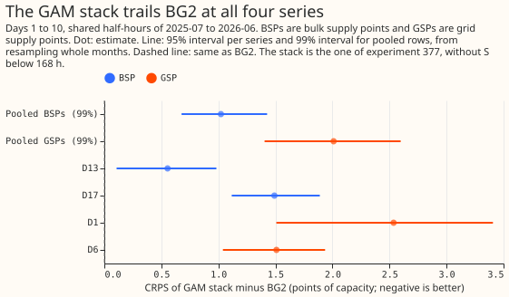
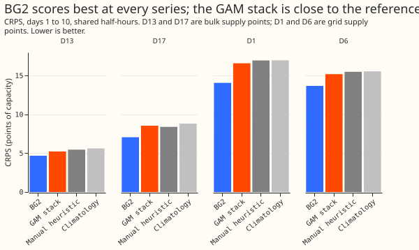

Top-down forecasts at four bulk and grid supply points: a GAM stack against a weekly XGBoost model
A generalised additive model (GAM) with a correction stage, fitted on the aggregate readings of
two bulk supply points and two grid supply points, scores 1.0 to 2.0 points of capacity worse than
BG2 and about level with two simple benchmarks. A bulk supply point (BSP) connects the 132 kV
electricity network to the 33 kV electricity network, and a grid supply point (GSP) connects the
transmission network to the 132 kV electricity network. The four series are D13 and D17 (BSPs) and
D1 and D6 (GSPs), labelled as in earlier experiments. "The stack" is the GAM of experiment 377,
labelled "stack without S below 168 h": the stack has no two-number summary of solar output below
168 hours and no daylight blend. BG2 is the best-guess forecast of experiment 87, which at these
series is its weekly-refitted XGBoost model alone (b_weekly). The two benchmarks are
manual_heuristic (NGED's rule of thumb) and climatology (the typical value for the month,
half-hour, and weekday type). A score is the continuous ranked probability score (CRPS), estimated
from 11 quantiles, in points of effective capacity (percent of the series' capacity); a negative
difference favours the stack. No research default exists for this family, so nothing is adopted.
A simple XGBoost model refitted monthly, with and without the input changes of experiment 381, is
scored beside the others (stage D).


Results (CRPS in points of effective capacity; lower is better)
- Verdict. Refuted for both groups. Stack minus BG2, days 1 to 10, 99% interval from 20,000 resamples of whole months: BSPs +1.02 (+0.68 to +1.43); GSPs +2.01 (+1.41 to +2.60). The registered margin was +0.20 and both lower ends are above it. The BSPs and GSPs are never pooled together.
- Per series (95%, 2,000 resamples). D13 +0.55 (+0.11 to +0.98); D17 +1.49 (+1.12 to +1.89); D1 +2.54 (+1.51 to +3.41); D6 +1.51 (+1.04 to +1.94). Leaving out one series leaves every pooled estimate above zero (BSP without D13 +1.49, without D17 +0.55; GSP without D1 +1.51, without D6 +2.54).
- Absolute scores, days 1 to 10 (BG2, stack, manual heuristic, climatology). D13 4.68, 5.23, 5.47, 5.62; D17 7.06, 8.55, 8.39, 8.82; D1 14.06, 16.60, 16.97, 16.98; D6 13.68, 15.19, 15.50, 15.55.
- The stack against the references (99%). Against the manual heuristic: BSPs -0.04 (-0.44 to +0.30), GSPs -0.34 (-1.02 to +0.13). Against climatology: BSPs -0.33 (-0.90 to +0.11), GSPs -0.37 (-1.27 to +0.56). All four intervals include zero. The stack scores better than BG2 at 0 of 4 series, than the manual heuristic at 3 of 4, and than climatology at 4 of 4 (days 1 to 10).
- BG2 against the references (stage A rows). The references were scored in a first script on the half-hours shared by BG2, climatology, and the manual heuristic; the stack contrasts use the half-hours shared by all four arms. BG2's score differs by less than 0.001 points between the two row sets.
- BG2 against the references (99%). BG2 minus the manual heuristic is -1.06 (BSPs) and -2.35 (GSPs); BG2 minus climatology is -1.35 and -2.38. All four intervals exclude zero.
- By lead (stack minus BG2, pooled). Days 8 to 10: BSPs +0.68 (+0.39 to +1.01), GSPs +0.94 (+0.23 to +1.72). Days 11 to 14 (beyond NGED's horizon, descriptive): BSPs +0.62, GSPs +1.14. On day 1 the gap per series is D13 +0.90, D17 +2.39, D1 +4.94, D6 +1.64.
- Slices (stack, BG2). The stack is worse than BG2 in every slice read, and level at BSP cold nights (5.21 against 5.20): sunny half-hours (BSPs 11.9 against 9.8, GSPs 15.2 against 14.2), winter nights, and Economy 7 steps. The gap is largest at the GSPs on Christmas (22.0 against 15.9) and bank holidays (22.4 against 14.6).
- Tails, days 1 to 10 (stack; BG2). Pinball loss at q01, q05, q95, q99 and coverage at the
same quantiles are computed per series by
e00386_score_b.py. Coverage at q05 is 0.063 (D13), 0.061 (D17), 0.104 (D1), and 0.055 (D6) for the stack against 0.028, 0.037, 0.042, and 0.044 for BG2; coverage at q95 is 0.935, 0.927, 0.971, and 0.949 against 0.927, 0.960, 0.955, and 0.935. The stack's lower tail is too narrow at D1 (0.104) and a little at D13 and D17; D6 is near nominal (0.055). The stack's upper tail is too wide at D1 (q95 coverage 0.971). BG2's lower tail is too wide at all four. - Curtailment cost is not scored: the metric needs the node and generator tables, and the readings here are the aggregates alone.
Stage D: a simple XGBoost model, refitted monthly
A plain XGBoost model refitted monthly scores 0.04 to 0.06 points worse than BG2 at the bulk
supply points and 0.26 to 0.28 points worse at the grid supply points, and the input changes of
experiment 381 add nothing in the pooled groups. The control is experiment 87's n1h recipe (the
BG2 weekly member) refitted monthly on the whole history with a 0.5-year half-life and 500 rounds.
The bundle adds the daily mean shortwave, the sunny flag, and a 1-year half-life, as experiment
381's best bundle does. Experiment 381 has no forecasts at these four series, so both arms were
refitted here (12 monthly refits per series, 2025-07-01 to 2026-06-01; boosters saved as .ubj
files under work/boosters/monthly/ in this experiment's private data folder). BG2 is the stored
weekly refit of experiment 87, so the control is meant to differ from BG2 in refit cadence only; the
training rows, parameters, and half-life are experiment 87's code, which was not diffed against the
stored BG2 run.
- Widening. The stored BG2 has the width of a control widened by 1.15: its mean 90% interval
width (q95 minus q05) is 158.5 MW against 137.9 MW for the raw control and 158.6 MW for the
control widened by 1.15, which multiplies the distance of every quantile from the median by 1.15.
Experiment 87's code applies this factor to its headline arms, and experiment 381's fit script
does not. Every XGBoost arm is therefore scored raw and widened by 1.15 about the median (
_w), and the widened arms are the like-for-like comparison with BG2. - Control minus BG2 (CRPS, days 1 to 10, 99%). Raw: BSPs +0.04 (-0.03 to +0.10), GSPs +0.28 (+0.02 to +0.63). Widened: BSPs +0.06 (+0.02 to +0.11), GSPs +0.26 (+0.05 to +0.49). Monthly refitting lowers the score by 0.04 to 0.06 points at the bulk supply points and by 0.26 to 0.28 points at the grid supply points, over days 1 to 10 (days 11 to 14: +0.13 at the grid supply points, interval -0.02 to +0.30).
- Bundle minus control. Raw: BSPs +0.005 (-0.057 to +0.064), GSPs +0.013 (-0.190 to +0.298). Widened: BSPs +0.006 (-0.051 to +0.061), GSPs +0.018 (-0.173 to +0.292). The three input changes do not help here.
- Against the stack. Widened bundle minus stack: BSPs -0.95 (-1.37 to -0.60), GSPs -1.74 (-2.48 to -0.85). Widened control minus stack: BSPs -0.96 (-1.39 to -0.59), GSPs -1.75 (-2.36 to -1.06). Both XGBoost arms beat the manual heuristic by about 1.0 (BSPs) and 2.1 (GSPs).
- Absolute scores, days 1 to 10 (control, bundle, widened control, widened bundle). D13 4.72, 4.67, 4.74, 4.69; D17 7.09, 7.15, 7.13, 7.19; D1 14.33, 14.50, 14.36, 14.50; D6 13.97, 13.84, 13.91, 13.80.
- Tails (widened control; widened bundle). Coverage at q05 is 0.031, 0.040, 0.044, 0.050 (control) and 0.031, 0.042, 0.046, 0.044 (bundle) for D13, D17, D1, D6; coverage at q95 is 0.924, 0.959, 0.952, 0.933 and 0.922, 0.964, 0.948, 0.934. These coverages are within 0.006 of BG2's. The 5% quantile covers fewer than 5% of readings at D13, D17, and D1, so the lower tail is a little too wide, as BG2's lower tail is.
- Days 11 to 14 (descriptive). Control minus BG2 is +0.005 (BSPs) and +0.130 (GSPs); the bundle's gain over the control is again zero within the intervals.
- Cadence. The control is refitted monthly and BG2 is refitted weekly. A release claim for either XGBoost arm would need a weekly refit.
Lead bands and reverse flow
The stack's gap to BG2 shrinks with lead at all four series, and absolute scores are higher at the grid supply points than at the bulk supply points. CRPS in points of effective capacity on the shared half-hours of the scored year (stack, BG2, manual heuristic, climatology):
| Series | 0 to 24 h | 24 to 72 h | 72 to 168 h | 168 to 240 h |
|---|---|---|---|---|
| D13 (BSP) | 4.92, 4.02, 5.58, 5.71 | 5.00, 4.20, 5.42, 5.63 | 5.21, 4.76, 5.44, 5.62 | 5.53, 5.10, 5.50, 5.61 |
| D17 (BSP) | 8.27, 5.89, 8.50, 8.85 | 8.40, 6.27, 8.33, 8.80 | 8.58, 7.23, 8.37, 8.80 | 8.71, 7.78, 8.44, 8.85 |
| D1 (GSP) | 15.81, 10.87, 17.11, 17.08 | 16.67, 12.03, 16.84, 16.92 | 16.70, 14.34, 16.80, 16.94 | 16.69, 16.16, 17.23, 17.04 |
| D6 (GSP) | 13.53, 11.90, 15.31, 15.37 | 14.74, 13.15, 15.51, 15.60 | 15.44, 13.87, 15.34, 15.48 | 15.73, 14.40, 15.76, 15.69 |
- Gap to BG2, 0 to 24 h against 168 to 240 h. D13 0.90 to 0.42; D17 2.39 to 0.93; D1 4.94 to 0.53; D6 1.64 to 1.33.
- Reverse flow, as a proxy for generation connected to the electricity network below each node. This experiment's data holds no capacity of that generation. Taking a negative reading to mean power flowing out of the node (the sign convention is assumed, not checked here), the share of scored-year half-hours with a negative reading is 50% at D1 (GSP), 16% at D6 (GSP), 10% at D17 (BSP), and 3% at D13 (BSP). The lowest reading is -94 to -101 points of capacity at D1, D6, and D17, and -36 at D13. Reverse flow is more common at the grid supply points, but the share is not a measure of generation capacity.
Checks
- Median minus mean. The stack's median equals its mean exactly (difference 0.0 at all four series), because the spread is added to the corrected mean as a centred table. The check cannot expose a shifted forecast here. BG2 stores no mean.
- Mean-forecast error beside the quantile score. The mean-forecast error was not computed; the error of the median forecast (MAE of the median, days 1 to 10) is printed and agrees in direction with CRPS at all four series (BG2 8.33, 12.62, 25.91, 24.89 for D13, D17, D1, D6).
- Triggers fired. Review trigger 2 (a result contradicts a registered prediction): the result contradicts its registered predictions P1 and P2 (stack minus BG2 expected at most +0.40 and +0.80). The lead pattern supplies an untested explanation (the stack lacks BG2's recent-power input). No later experiment depends on this result yet. An audit by a fresh agent is requested in the pull request; its findings are triaged there.
Setup and caveats
- Code and reuse.
ml-experiments/00386-*/copies experiment 377's stack (e00386b_*ande00386bs*_*) and experiment 161's input rows; the ensemble arrays are rebuilt from the local ECMWF archive (read only, no fetch), and the rebuild reproduces the stored arrays of another substation (D10) exactly. BG2, climatology, and the manual heuristic are experiment 87's stored forecasts onfold_a_daily_gap_v1. - What could not be fitted. The PV capacity is pinned to zero at all four series (no record of when each installation's capacity changed exists), so the stack has no explicit solar term; the stack has no regional wind or solar input, which experiment 36 found helped at GSPs.
- Protocol.
demand-v1metrics, folds by month, 12-month minimum history (all four series have more than 12 months). The protocol's group table knows only the Primaries, so the scoring script adds the labels BSP and GSP. The stack refits monthly. - Stage D rows. Experiment 87's training rows and the daily frames are reused; the cut-offs of every refit follow experiment 87's leakage checks. The bundle of experiment 381 was chosen on Primaries, not on these series.
- What to try next. A stack with a recent-power term at these aggregates, and a stack with the embedded generation and storage under each node as explicit terms.